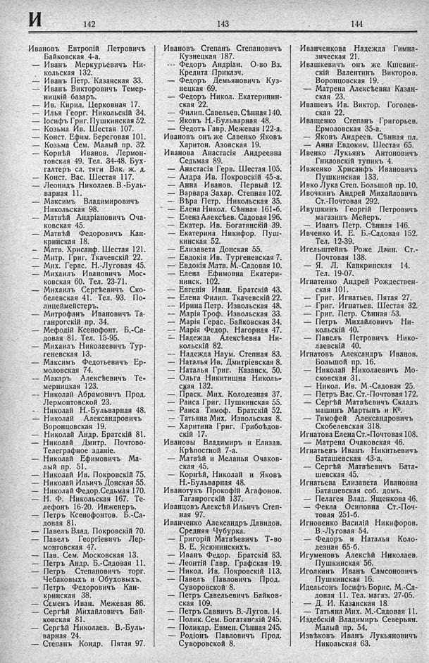

Лист источника 398
Скан

Распознанный текст
И
142
143
144
Ивановъ Евтропій Петровичъ
Байковская 4-а.
— Иванъ Меркурьевичъ Ни-
кольская 132.
— Иванъ Петр. Казанская 33.
— Иванъ Викторовичъ Темер-
ницкій базаръ.
— Ив. Кирил. Церковная 17.
— Илья Георг. Никольскій 34.
— Іосифъ Григ. Пушкинская 52.
— Козьма Ив. Шестая 107.
— Конст. Ефим. Береговая 101.
— Козьма Сем. Малый пр. 32.
— Корнѣй Иванов. Лермон-
товская 49. Тел. 34-48. Бух-
галтеръ сл. тяги Влк. ж. д.
— Конст. Вас. Шестая 117.
— Леонидъ Николаев. В.-Буль-
варная 11.
— Максимъ Владимировичъ
Никольская 98.
— Матвѣй Андріановичъ Оча-
ковская 45.
— Матвѣй Федоровичъ Кан-
кринская 18.
— Матв. Хрисанф. Шестая 121.
— Митр. Григ. Ткачевскій 22.
— Мих. Герас. Н.-Луговая 45.
— Михаилъ Ивановичъ Мос-
ковская 60. Тел. 23-71.
— Михаилъ Сергѣевичъ Ско-
белевская 41. Тел. 93. По-
лицеймейстеръ.
— Митрофанъ Ивановичъ Та-
ганрогскій пр. 34.
— Мефодій Ксенофонт. Б.-Са-
довая 81. Тел. 15-95.
— Михаилъ Николаевичъ Тур-
геневская 13.
— Максимъ Федотьевичъ Ер-
моловская 74.
— Макаръ Алексѣевичъ Те-
мерницкая 123.
— Николай Абрамовичъ Прод.
Лермонтовской 23.
— Николай Н.-Бульварная 48.
— Николай Александровичъ
Воронцовская 19.
— Николай Андр. Братскій 81.
— Николай Дмитр. Почтово-
Телеграфное зданіе.
— Николай Ефимовичъ Ма-
лый пр. 51.
— Николай Ив. Покровскій 75.
— Николай Ильичъ Донская 55.
— Николай Федор. Седьмая 170.
— Н. Ф. Никольская 167. Те-
лефонъ 16-20. Инженеръ.
— Петръ Ксенофонтов. Б.-Са-
довая 81.
— Павелъ Влад. Покровскій 70.
— Павелъ Георгіевичъ Лер-
монтовская 47.
— Пав. Сем. Московская 13.
— Петръ Андр. Б.-Садовая 11.
— Петръ Степановичъ торг.
Чебаковыхъ и Обуховыхъ.
— Петръ Федоровичъ Кан-
кринская 38.
— Семенъ Иван. Межевая 86.
— Сергѣй Михайловичъ Бай-
ковская 81.
— Сергѣй Николаев. В.-Буль-
варная 24.
— Степанъ Кондр. Пятая 97.
Ивановъ Степанъ Степановичъ
Кузнецкая 187.
— Федоръ Андріан. О-во Вз.
Кредита Приказч.
— Федоръ Демьяновичъ Куз-
нецкая 69.
— Федоръ Никол. Екатеринин-
ская 22.
— Филип. Савельев. Сѣнная 140.
— Яковъ Н.-Бульварная 48.
— Ѳедотъ Гавр. Межевая 122-а.
Ивановъ онъ же Савенко Яковъ
Харитон. Азовская 19.
Иванова Анастасія Андреевна
Седьмая 89.
— Анастасія Герв. Шестая 105.
— Алдра Ив. Покровскій 45-а.
— Анна Иванов. Первый 12.
— Варвара Захар. Степная 102.
— Вѣра Петр. Никольская 35.
— Елена Никол. Сѣнная 161-б.
— Елена Алексѣев. Садовая 196.
— Екатер. Ив. Богатянскій 39.
— Екатерина Никифор. Пуш-
кинская 52.
— Елизавета Донская 55.
— Евдокія Ив. Тургеневская 7.
— Евдокія Матв. М.-Садовая 10.
— Елена Ефимовна Екатери-
нинск. 102.
— Евгенія Иван. Братскій 43.
— Елена Филип. Ткачевскій 22.
— Ирина Петр. Извольская 48.
— Марія Троф. Извольская 33.
— Марія Герас. Байковская 34.
— Марія Федор. Нагорная 47.
— Надежда Алексѣевна Ни-
кольскій 82.
— Надежда Наум. Степная 83.
— Наталья Ив. Дмитріевская 8.
— Наталья Григ. Казанск. 50.
— Ольга Никитишна Николь-
ская 132.
— Праск. Мих. Колодезная 37.
— Раиса Григ. Пушкинская 55.
— Раиса Тимоф. Братскій 52.
— Татьяна Мих. Извольская 8.
— Харитина Григ. Грибоѣдов-
скій 17.
Ивановы Владимиръ и Елизав.
Крѣпостной 7-а.
— Матвѣй и Меланья Очаков-
ская 45.
— Корнѣй, Николай и Яковъ
Н.-Бульварная 48.
Иванотукъ Прокофій Агафонов.
Таганрогскій 137.
Иванцовъ Алексѣй Ильичъ Степ-
ная 97.
Иванченко Александръ Давидов.
Средняя Чубурка.
— Григорій Матвѣевичъ Т-во
В. Е. Ясюнинскихъ.
— Иванъ Федор. Братскій 83.
— Леонтій Гавр. Графская 19.
— Никол. Ив. Покровскій 113.
— Павелъ Павловичъ Прод.
Суворовской 8.
— Петръ Савельевичъ Байков-
ская 109.
— Петръ Саввичъ В.-Лугов. 14.
— Полик. Сем. Богатянскій 245.
— Поликар. Евмен. Сѣнная 245.
— Родіонъ Павловичъ Прод.
Суворовской 8.
Иванченкова Надежда Гимна-
зическая 21.
Ивашкевичъ онъ же Кшевин-
скій Валентинъ Викторов.
Воронцовская 19.
— Матрена Алексѣевна Казан-
ская 23.
Ивашевъ Ив. Виктор. Гоголев-
ская 22.
Иващенко Степанъ Григорьев.
Ермоловская 35-а.
— Яковъ Андреев. Сѣнная пл.
— Анна Евдоким. Шестая 65.
Ивенко Лукьянъ Антоновичъ
Гниловскій тупикъ 4.
Ивженко Хрисанфъ Ивановичъ
Пушкинская 133.
Ивко Лука Степ. Большой пр. 10.
Ивочкинъ Андрей Михайловичъ
Ст.-Почтовая 292.
Ивушкинъ Георгій Петровичъ
магазинъ Мейеръ.
— Иванъ Петр. Сѣнная 146.
Ивченко И. Е. Б.-Садовая 152.
Тел. 12-39.
Игельштейнъ Роже Дзин. Ст.-
Почтовая 138.
— Я. Л. Канкринская 14.
Тел. 19-07.
Игнатенко Андрей Рождествен-
ская 101.
— Григ. Игнатьев. Пятая 27.
— Григ. Игнатьев. Шестая 32.
— Григ. Петр. Сѣнная 53.
— Петръ Михайловичъ Ни-
кольскій 40.
— Павелъ Петровичъ Нико-
лаевскій 40.
Игнатовъ Александръ Иванов.
Большой пр. 16.
— Николай Николаевичъ Мо-
сковская 31.
— Никол. Ив. М.-Садовая 25.
— Петръ Вас. Ст.-Почтовая 172.
— Сергѣй Матвѣевичъ Складъ
машинъ Мартынъ и К°.
— Тимофей Александровичъ
Скобелевская 318.
Игнатова Елена Ст.-Почтовая 108.
— Матрена Очаковская 46.
Игнатьевъ Иванъ Никитьевичъ
Баташевская 43-а.
— Сергѣй Матвѣевичъ Бата-
шевская 45.
Игнатьева Елизавета Ивановна
Баташевская соб. домъ.
— Пелагея Влад. Ященкова 46.
— Фекла Осиповна Ст.-Поч-
товая 251-б.
Игновенко Василій Никифоров.
В.-Луговая 54.
— Федоръ и Наталья Коло-
дезная 65-б.
Игуменовъ Алексѣй Николаев.
Пушкинская 56.
Иголкинъ Иванъ Самсоновичъ
Пушкинская 16.
Идельсонъ Іосифъ Борис. М.-Са-
довая 11. Тел. магаз. 27-05.
— Д. И. Казанская 18.
— Татьяна Мих. М.-Садовая 11.
Издебскій Владимиръ Северьян.
Малый пр. 54.
Извѣковъ Иванъ Лукьяновичъ
Никольская 63.